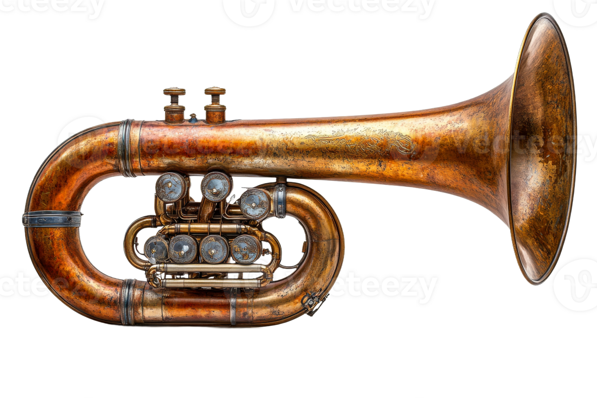
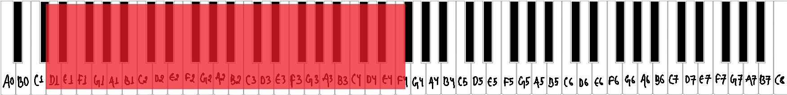
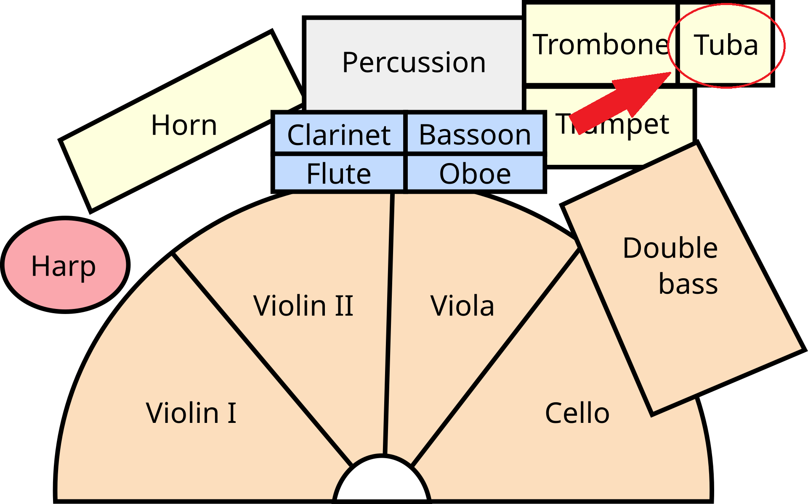
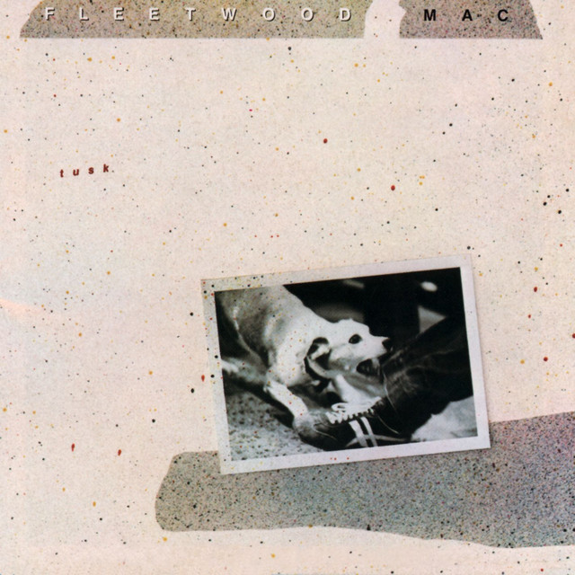
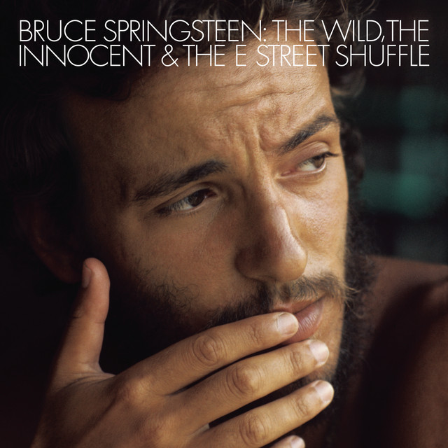
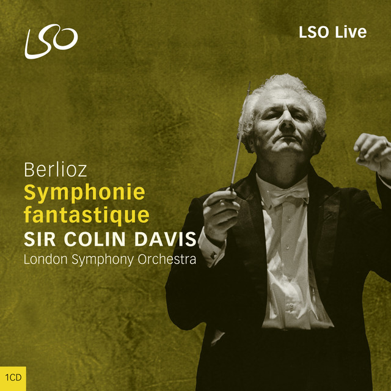

What is a tuba?
The tuba is the largest and lowest-pitched brass instrument. The player buzzes their lips into a large cup mouthpiece, and valves send the air through extra lengths of tubing. Its w ide, coiled tube gives a deep, round tone that anchors the whole brass section. [1]


Musical range and clef
Orchestral tubas play very low, with a commonly cited range of about D1 to F4. Different tuba sizes, such as F, E♭ and BB♭, reach slightly different notes. [2]
Tuba music is written in the bass clef, since almost all of its notes are far below middle C. [3]

Where is the tuba seated in an orchestra?
The brass section sits at the back of the orchestra, behind the woodwinds. From the conductor's podium, the horns are in the center, with the trumpets to their right and the trombones and tuba at the far right. The tuba sits at the far back right, forming the bottom of the brass section. [4]
Popular songs/pieces that feature the instrument:

Tusk

Wild Billy's Circus Story

Symphonie fantastique
Still Ray
References
- Wikipedia, "Tuba".
- Wikipedia, "Tuba".
- Wikipedia, "Tuba".
- Rockford Symphony Orchestra, "Are all orchestras arranged on stage the same way?".